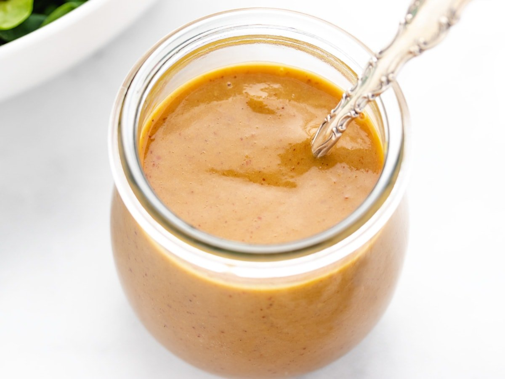

Vegan Mustard Sauce

Description
Prepare to spice up your meals with this awesome vegan mustard sauce! Bold, tangy, and packed with flavor, this sauce is the perfect addition to everything from roasted veggies to sandwiches and fries. It’s super easy to make, with simple plant-based ingredients that come together to create a zesty, creamy kick that will elevate any dish. Whether you're a mustard lover or just looking for a new sauce to try, this vegan version will quickly become your go-to for adding a punch of flavor to your favorite meals. Let’s get saucy!
Ingredients
- 50 g vegan butter
- 2 garlic cloves finely chopped
- 100 ml white wine
- 2 tbsp wholegrain mustard (or dijon mustard)
- 300 g vegan cream (or silken tofu cream sauce)
- salt
- black pepper
Steps
- Heat up a frying pan on a medium-high heat
- Add your butter into the pan and allow it all to melt
- Add your chopped up garlic into the pan and cook for a few minutes, until the garlic has browned slightly. Make sure to stir regularly to stop the garlic from burning
- Mix your mustard into the pan so that it forms a paste. Heat this through for a minute
- Pour in your white wine to the pan and put it on to a high heat to cook the wine off so that it forms a thicker yellow emulsion in the pan. This should take about 5 minutes
- Gradually mix in your vegan cream making sure to stir as you do
- Cook this for another 5 minutes and then make sure to taste and season
- Pour it out into a jug to serve
Home